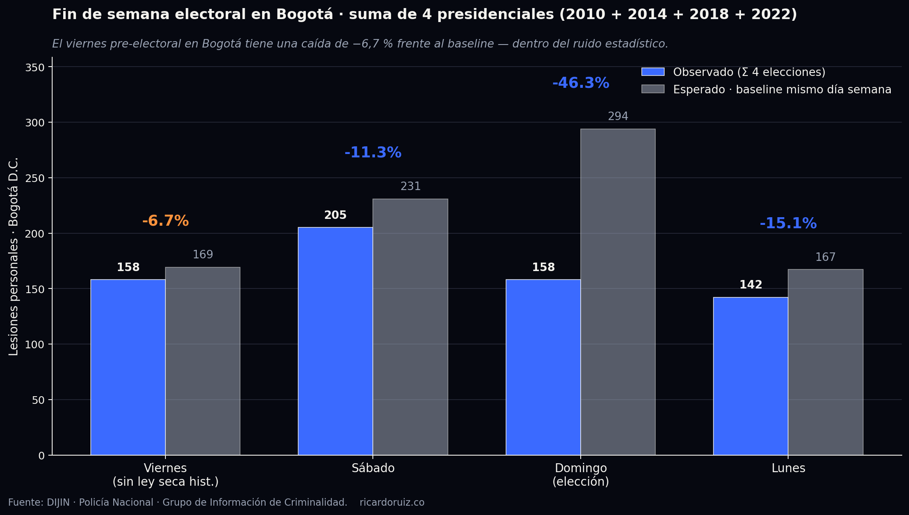
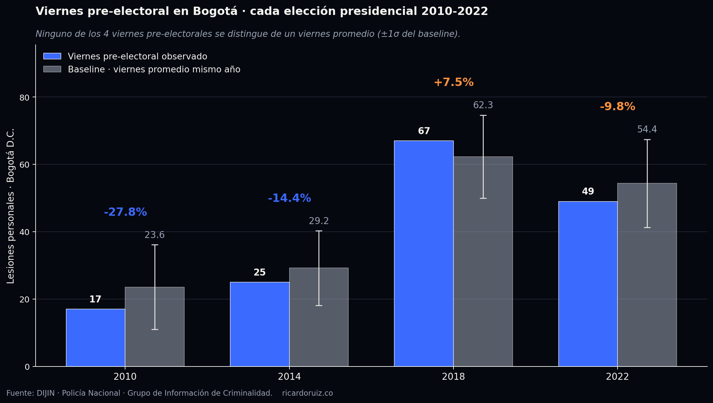

Ley seca al viernes en Bogotá: lo que dicen los datos de la Policía
El Decreto Distrital 191 del 28 de mayo de 2026 adelantó la ley seca al viernes 6:00 pm. Es la primera vez que Bogotá lo hace. Acá lo que muestran los registros DIJIN de los 4 fines de semana presidenciales 2010-2022.
Amanecimos con la noticia de que la Alcaldía Mayor de Bogotá expidió el Decreto Distrital 191 del 28 de mayo de 2026, que prohíbe el expendio y consumo de bebidas embriagantes en sitios públicos o abiertos al público en todo el territorio distrital desde el viernes 29 de mayo a las 6:00 pm hasta el lunes 1 de junio al mediodía, dos días antes de la primera vuelta presidencial. Ni la Alcaldía, ni Asobares, ni la concejala Heidy Sánchez (Unión Patriótica), ni la senadora Angélica Lozano (Alianza Verde) presentaron datos de seguridad para sustentar su posición. Todas las orillas tienen equipos técnicos detrás. Resulta llamativo que la decisión y el debate hayan pasado por encima de la pregunta básica: ¿el viernes pre-electoral en Bogotá ha sido históricamente más violento que un viernes normal?
El antecedente: nunca antes empezó un viernes
Verificamos los decretos presidenciales anteriores. En 2018 (gobierno Duque, Alcaldía Peñalosa) aplicó el estándar nacional desde el sábado 26 de mayo 6:00 pm. En 2022 primera vuelta (Decreto Nacional 830 de 2022, Alcaldía Claudia López) también desde el sábado 28 de mayo 6:00 pm. En 2022 segunda vuelta la Alcaldía López expidió el Decreto Distrital 244 con el mismo horario sabatino. Esta es la primera elección presidencial en la que Bogotá adelanta el cierre al viernes. La administración Galán argumenta prudencia preventiva ("conservar la seguridad, el orden público y la protección de los derechos y libertades públicas"); las voces críticas argumentan impacto al sector nocturno.
El dato central: el viernes pre-electoral no tiene pico
Cruzamos los registros oficiales de la DIJIN — Policía Nacional para los cuatro ciclos presidenciales del período (2010, 2014, 2018, 2022) en dos delitos con desagregación diaria: homicidio intencional y lesiones personales. Año completo, nacional y filtrado a Bogotá D.C. Para cada uno de los cuatro días del fin de semana electoral (viernes previo, sábado, domingo de votación y lunes) calculamos un baseline con el promedio del mismo día de semana del resto del año (n ≈ 51 puntos por baseline), que absorbe estacionalidad semanal. Sumamos las cuatro elecciones para reducir el ruido año a año.
El resultado, en lesiones personales en Bogotá agregadas en los cuatro ciclos:

En homicidios el N por día en Bogotá es muy bajo (entre 0 y 4 casos por día), así que los porcentajes son estadísticamente débiles y los reportamos como control. A nivel nacional el patrón se replica: viernes pre-electoral cae apenas 4,4 % en lesiones, mientras el domingo cae 38,9 %.
El viernes electoral, año por año
La caída agregada de 6,7 % cabe dentro de la dispersión natural de un viernes promedio en Bogotá. La desviación estándar de un viernes promedio en lesiones está entre 11 y 13 lesiones, y los deltas observados son del orden de 2 a 3 lesiones por viernes. Visualmente: las barras observadas se quedan dentro del intervalo ±1σ del baseline en cada uno de los 4 años.

Lo que sí cae (y por qué no se le puede atribuir solo a la ley seca)
El descenso del domingo es grande: −46 % en lesiones Bogotá. Pero ese descenso no es atribuible solo al cierre de licores. El domingo de elecciones combina varios factores que actúan a la vez:
Ley seca: bares y licoreras cerrados, alcohol restringido en hogares.
Evento electoral: ciudadanía en casa votando, transporte limitado, despliegue policial reforzado en puestos, fuerza pública en máxima alerta.
Cierre voluntario del comercio nocturno y movilidad reducida en zonas habituales de rumba.
El sábado y el lunes electorales también tienen ley seca, pero no son días de votación: caen solo −11 % y −15 % en lesiones Bogotá. La diferencia entre esos −11 a −15 puntos y los −46 puntos del domingo es justamente la contribución del "evento elecciones" sobre el ya combinado efecto de la ley seca. Eso sugiere que la mayor parte del descenso del domingo viene del día electoral en sí — no del cierre del expendio de licor.
Lo que dijeron los actores políticos (todos sin cifras)
La concejala Heidy Sánchez Barreto (Unión Patriótica) calificó la medida de "desproporcionada e inconsulta" y recordó:
La senadora Angélica Lozano (Alianza Verde) recordó que "la ley seca nunca ha incluido el viernes" y defendió a los trabajadores de la vida nocturna. Asobares, por la voz de Camilo Ospina, calificó la medida como un "freno de mano" para el comercio formal. Bares Unidos convocó marcha al mediodía del 29 de mayo en la Plaza de Bolívar. Ninguno de estos pronunciamientos presentó una sola cifra de delito sobre el viernes pre-electoral histórico. El argumento de la oposición fue exclusivamente gremial y de "tradición". La administración Galán y el secretario de gobierno Gustavo Quintero defendieron la medida en clave preventiva, también sin desglose estadístico que la respalde sobre el histórico.
Tabla detallada · lesiones personales en Bogotá
| Año | Viernes | Baseline V | Δ V | Domingo | Baseline D | Δ D |
|---|---|---|---|---|---|---|
| 2010 elección 30-may | 17 | 23,6 | −27,8 % | 29 | 44,7 | −35,1 % |
| 2014 elección 25-may | 25 | 29,2 | −14,4 % | 21 | 54,3 | −61,3 % |
| 2018 elección 27-may | 67 | 62,3 | +7,5 % | 59 | 103,2 | −42,8 % |
| 2022 elección 29-may | 49 | 54,4 | −9,8 % | 49 | 91,9 | −46,7 % |
| Σ 4 elecciones | 158 | 169,4 | −6,7 % | 158 | 294,0 | −46,3 % |
Por qué el viernes es el único día con contrafactual válido
Este análisis está enmarcado en la lógica que esta plataforma viene desplegando en su módulo de evaluación de política pública del Lab de PP. Para juzgar una medida hace falta un contrafactual: lo que habría pasado en ausencia de la intervención. En este caso:
Para el sábado, domingo y lunes electorales no existe contrafactual limpio. La ley seca ha aplicado en todas las elecciones presidenciales del país en el período. Cualquier comparación con un sábado o domingo no electoral mezcla dos cosas inseparables: el efecto del cierre de licores y el efecto del evento electoral. No se puede atribuir una de las dos por separado.
Para el viernes, en cambio, sí hay contrafactual. Los cuatro viernes pre-electorales 2010-2022 en Bogotá no tuvieron ley seca. Son la línea base limpia con la que juzgar el viernes 2026 — único año en que sí la tendrá. Y la línea base no muestra un viernes pre-electoral peligroso: en cuatro ocasiones se ha comportado como un viernes normal. Si la decisión es preventiva por temor a un viernes atípico esta vez, vale la pena que se declare así — no como una medida con respaldo en el histórico, porque el histórico no la respalda.
Limitaciones honestas del análisis
Homicidios en Bogotá tienen N muy bajo por día (0–4). El % se vuelve ruido. Usamos lesiones personales como métrica primaria porque tiene N estable (decenas por día).
El baseline es del mismo año (n≈51 por dow). No corrige por tendencia anual ni por estacionalidad mensual fina. Sí absorbe estacionalidad semanal.
No medimos el viernes 2026 — todavía no existe. Medimos los 4 viernes previos como referencia. La evaluación post-evento debe rehacerse con los datos del 29 de mayo de 2026 cuando estén disponibles.
Metodología en una página
Fuente: Ministerio de Defensa Nacional · Policía Nacional · Dirección de Investigación Criminal e Interpol (DIJIN) · Grupo de Información de Criminalidad. Archivos oficiales Homicidio Intencional 2010/2014/2018/2022.xlsx y lesiones_personales_2010/2014/2018/2022.xlsx, año completo.
Cobertura: nacional (~13.500 homicidios/año, ~80.000 a 138.000 lesiones/año) y subset de Bogotá D.C. identificado por el campo MUNICIPIO normalizado.
Baseline: para cada (delito, scope, día de semana) se calcula el promedio del mismo día de semana del año excluyendo los 4 días del fin de semana electoral (n≈51 por baseline). Se reporta media y desviación estándar muestral.
Métrica: Δ % = (observado − baseline) / baseline × 100. Una caída entre −5 % y +5 % se considera dentro del ruido estadístico habitual, dado que la desviación estándar relativa de un día promedio Bogotá es del orden de ±20 %.
Agregado multi-año: suma directa de observados y baselines (no promedio de porcentajes), lo que da más peso a años con mayor N y reduce el ruido aleatorio anual.
Lo que no medimos: riñas o casos de violencia que no terminaron en lesiones reportadas, otros delitos de oportunidad (hurtos, accidentes de tránsito por alcohol). Estos podrían comportarse distinto, aunque su patrón histórico tampoco está documentado en el debate público actual.
Código del análisis: Python sin dependencias externas más allá de openpyxl y matplotlib. Reproducible end-to-end desde los XLSX originales hasta el JSON intermedio y las gráficas.